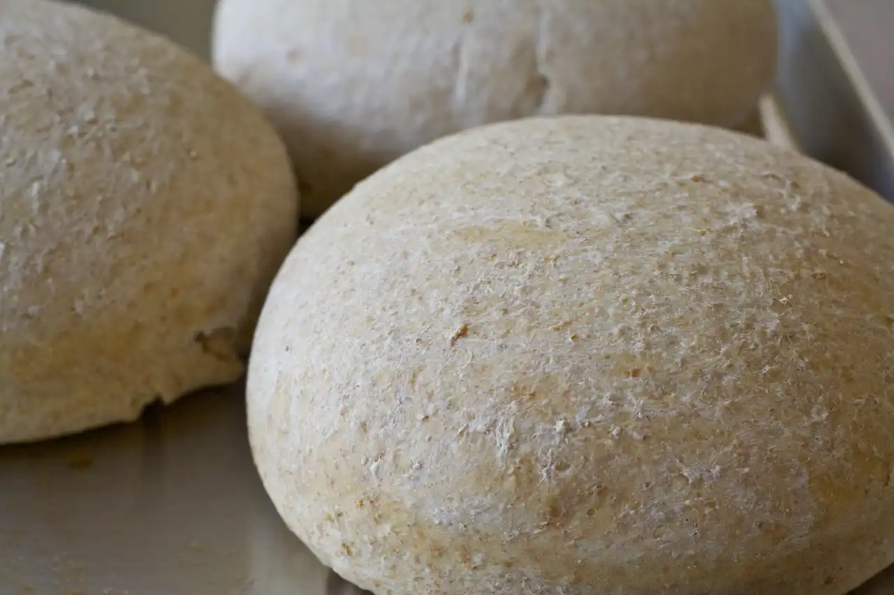

Whole Wheat Moroccan Bread

The traditional recipe for Moroccan Khubz Maghrebi calls for all white flour. Although this works well,
it imparts little flavor, so I've created a heartier whole wheat version.
- Prep20 min
- Rise1 hour 30 min
- Cook30 min
- Total2 hour 30 min
- Yields3 round loaves
Ingredients
Dough
- 2 ½ cups warm water (100° to 110°F)
- 2 ¼ teaspoons instant yeast
- 5 cups all-purpose flour
- 2 cups whole wheat flour
- 2 teaspoons kosher salt
- cooking spray
- 2 teaspoons whole wheat flour
- cooking spray
- 1 tablespoon extra-virgin olive oil
Directions
- In a large bowl, dissolve yeast in water.
- In a small bowl, combine flours and salt.
- Pour in about ⅓ of the the flour into the mixing bowl with water.
- Mix well with a dough whisk or wooden spoon until incorporated.
- Pour in another ⅓ of the flour, stir, and repeat until incorporated.
- Stir well with a dough whisk until a rough ball of dough starts to forms.
- Turn out onto a clean work surface and knead by hand until dough is soft and smooth, about 8 to 10 minutes.
Rising
- Form dough into a round and place in a lightly greased bowl.
- Cover with plastic wrap or a clean kitchen towel and let dough rise until doubled, about 1 hour.
- By hand, gentle remove the dough from the bowl, press down, and form into a 12 inch cylinder.
- Using a pastry knife or bench scrapper, cut into three each pieces. Form each piece into a disc.
- Lightly grease a baking sheet and place all three discs onto it.
- Sprinkle each with whole wheat flour and cover.
- Let sit until dough has risen by half, about 40 minutes.
Baking
- Preheat oven to 350°F with rack at bottom third position.
- Remove plastic wrap from baking sheet and brush each with 1 teaspoon oil.
- Bake at 350°F until an instant-read thermometer inserted into center of loaf reads 190°F, about 30 to 35 minutes.
- Note that the bread will only turn slightly golden brown.
- Remove from oven and transfer to a wire rack. Let cool completely to room temperature, about 2 to 3 hours.
- Slice and serve.